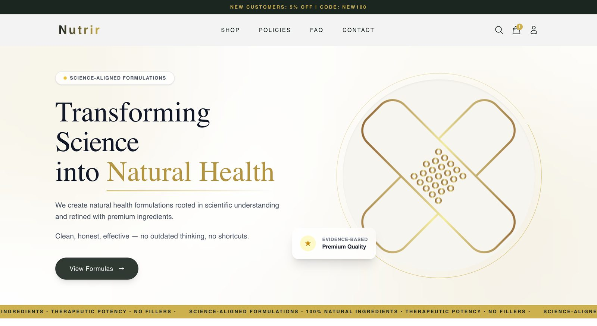
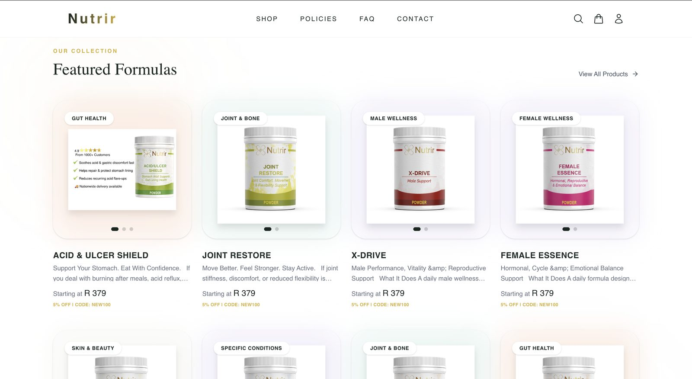
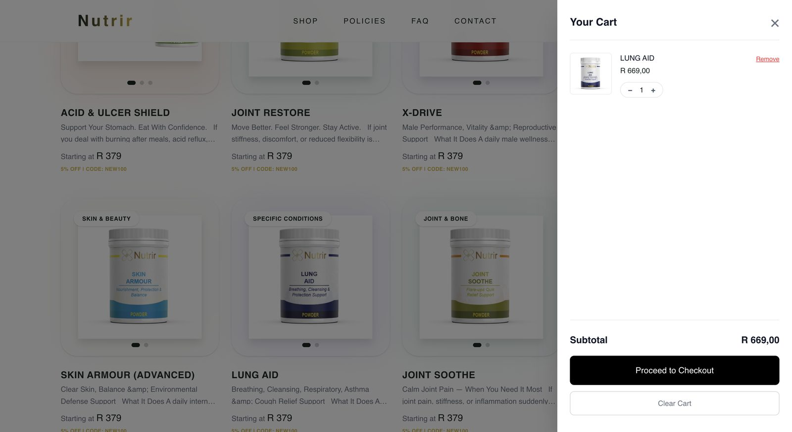
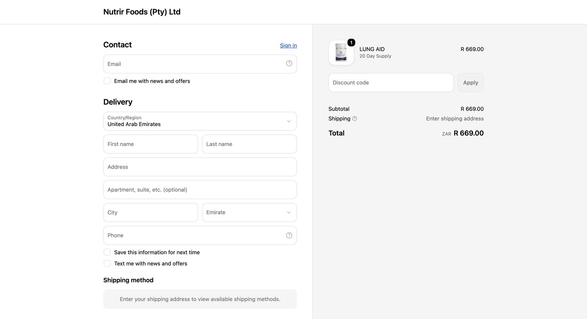

Nutrir Foods
E-commerce for a natural health food brand — a custom Next.js storefront sitting over Shopify's commerce backend, with the product catalogue built and maintained by a scripted pipeline rather than by hand.
Live product: nutrirfoods.com — the live store changes with the brand's catalogue; this page documents the build.
The brief
Nutrir sells supplement and wellness products where each item needs real explanatory copy — what it does, what's in it, who it's for. A default Shopify theme handles the transaction fine but flattens that content into a generic product page.
The brand needed a storefront it controlled the presentation of, without giving up Shopify's checkout, inventory and order management — the parts you do not want to rebuild.
What I built
Custom storefront
Next.js front end with the brand's own layout and product presentation, rendering rich product copy properly instead of squeezing it into a theme.
Catalogue structure
Products organised by category and type with tags and variant options, so collections and filtering hold up as the range grows.
Product data pipeline
A Python script generating the full Shopify import — titles, HTML bodies, categories, tags, variants, metafields, SEO title and description — from one source list.
SEO at import time
Search metadata generated alongside each product rather than filled in afterwards, so nothing ships with a blank SEO description.
Checkout & payments
Shopify's checkout and payment flow kept intact behind the custom front end — no reinventing a payment path that already works.
Orders & inventory
Order and stock management stays in Shopify admin, where the client's team already knows how to work.
Architecture
Source list (products, copy, categories)
│
│ generate_products.py
▼
Shopify import CSV
handle · title · body HTML · vendor
category · type · tags · variants
metafields · SEO title & description
│
▼
Shopify catalogue · inventory · checkout · orders
│
│ Storefront data
▼
Next.js storefront brand layout · product pages
collections · cart handoff
Generating the catalogue rather than entering it. A range of this size entered by hand through Shopify admin means inconsistent categories, missing metafields and blank SEO fields within a month. Scripting the import makes the catalogue reproducible: fix the generator, re-import, and every product is corrected at once.
The harder parts
Splitting responsibility cleanly
The rule was simple: anything commercial — money, stock, orders — stays with Shopify. Anything about presentation belongs to the storefront. Blurring that line is how headless commerce projects turn into maintenance problems.
Rich product copy in a CSV
Product bodies are formatted HTML with structured sections. Getting that through a CSV import without mangling quoting or losing markup meant the generator had to own escaping rather than trusting hand-edited spreadsheets.
Health claims and copy discipline
Supplement copy carries real constraints on what can be claimed. Keeping product descriptions in a single generated source made it possible to review and adjust wording across the whole range consistently, instead of chasing individual product pages.
Stack
Screens



